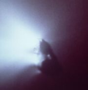
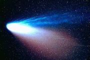

Struktura
Struktura a jasnost komet
Komety se skládají z jádra, komy, ohonu a vodíkové korony.
Jádro

Jádro komety Halley
(sonda Gitto)
{kind=link}
Jádro je v podstatě vlastní těleso komety. Mívá značně nepravidelný tvar a v průměru měří několik kilometrů (cca 800 m až 50 km).
Skládá se převážně z vodního ledu, zmrzlých plynů a hornin. Obsahuje též organické látky, což způsobuje jeho mimořádnou tmavost – albedo bývá okolo 4 %. Jádro je velmi křehké.
Většinou není přímo pozorovatelné, protože je obklopeno komou.
Koma
Při přiblížení komety ke Slunci začnou sublimovat látky z jádra. Z těch vznikne koma. Její průměr je cca 105 až 106 km.
Koma společně s jádrem komety tvoří hlavu komety.
Ohon

Kometa Hale - Bopp
Na obrázku je jasně patrný plazmový a prachový chvost.
{kind=link}
Ohon vzniká působením tlaku slunečního záření z částic, které se již neudrží v komě. Skládá se ze dvou částí - prachový a plazmový chvost. Plazmový je složen z plynů, je úzký, přímý, mívá namodralou barvu. Září převážně ionizací. Prachový chvost při pohybu komety jakoby zůstává za ní a proto je zahnutý. Délka ohonu je až 108 km. U komet, které neuvolňují dostatečné množství materiálu se ohon vůbec nemusí vytvořit.
Ohon komety je velice řídký. Jeho zdánlivý jas je způsoben tím, že se promítá na tmavou oblohu. Isaac Newton při svých pokusech zjistil, že stejné množství světla by odrážel pruh vzduchu široký 1 - 2 palce vzduchu.
{kind=link}
Kometa ohon vždy odvrací směrem od Slunce. Na částice ohonu působí totiž kromě gravitační síly Slunce také odpudivá síla jeho záření. Pro většinu částic převáží právě působení odpudivé síly.
Občas dojde k poměrně vzácné situaci, kdy hmotnější částice vytvoří protichvost (ohon mířící ke Slunci).
Vodíková koróna
Též vodíkové halo. Velice řídká atmosféra z vodíků obklopující komu. Bývá několikrát větší než koma a není viditelná.